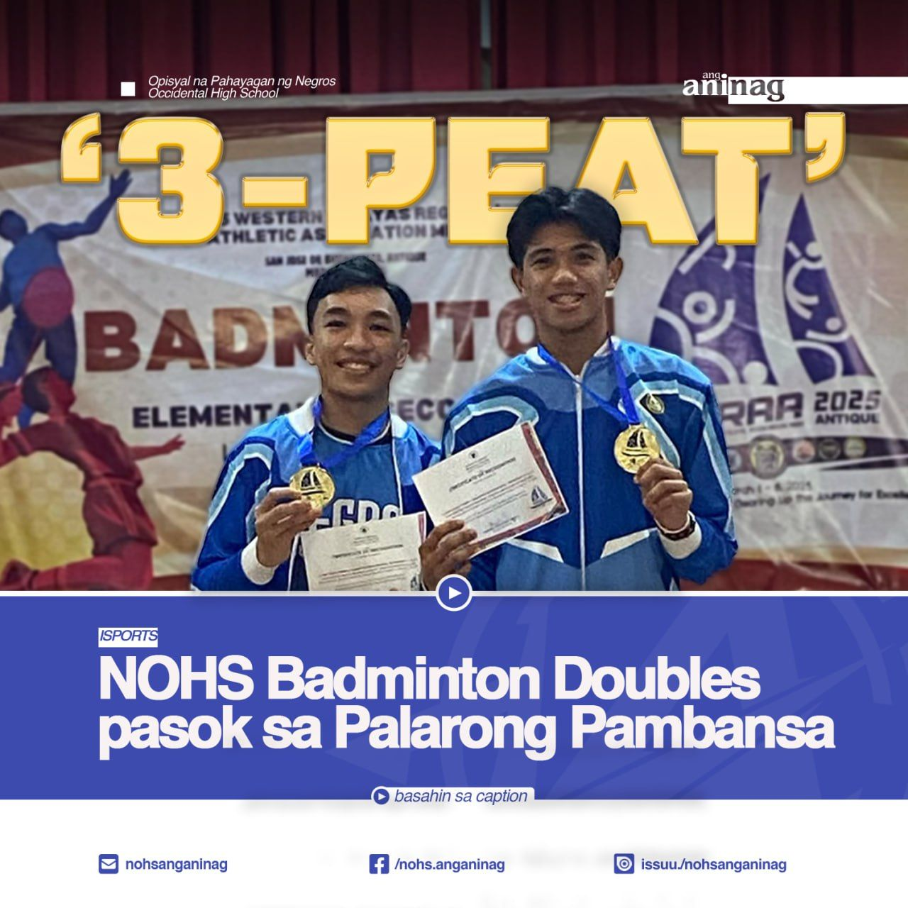
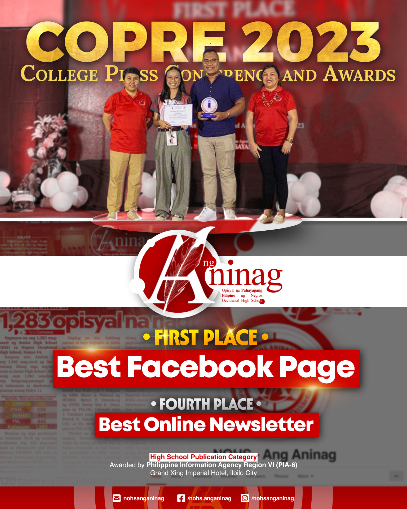
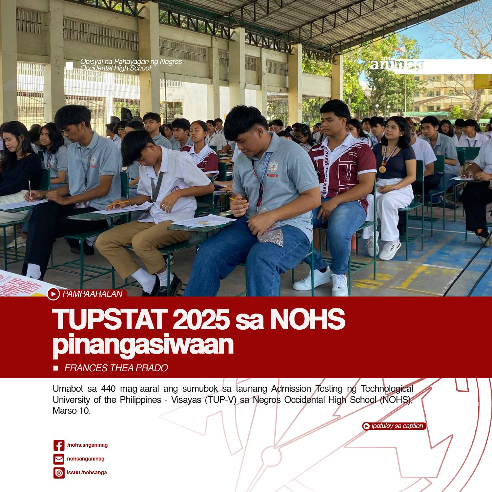

BALITANG ISPORTS | Intramurals 2023: Opisyal na Sinimulan
Matagumpay na idinaos ang pagbubukas ng Intramurals 2023 sa kabila ng matinding init ng panahon, Disyembre 1, 2023.
Nagsimula ang programa sa isang mahabang parada ng mga atleta mula sa ika-pitong baitang hanggang ika-12 na baitang, kung saan ito'y pinangunahan ng NOHS Brass Band at NOHS Miss Physique 2023.
"Ang diwa ng laro ay hindi sa kung paano ito ipapanalo, kundi sa kung paano ito nilaro." Ani Ginoong Romar Sarabia mula sa kagawaran ng MAPEH Department kung saan kaniyang pinag-diinan ang kahalagahan ng disiplina at pagka-isport sa kahit sinong kalaban man o katunggali.
Kaugnay ng pagbubukas ng programa, sumunod ang pagtaas ng banner ng paaralan na sinundan naman ng pagwagayway ng mga bandila ng iba't-ibang mga baitang kung saan itinaghal na pinakamabilis ang ika-pitong baitang na sinundan ng ika-walo at ika-siyam na baitang.
Pinangunahan naman nila Jomil Saludo, WVRAA Silver Medalist, at Aj Lorenz Jurada at Rey Nier Andrew Dalimo-os, Palarong Pambansa Boys Doubles ang pagsindi ng apoy ng lampara na sumisimbolo ng sumisibol at nag-aapoy na damdamin ng mga manlalaro.
Sa temang "Batang Negrosanon, Kampeon para sa Matatag na Nasyon", ipinahayag ni Jurada, mula sa Badminton ang kanilang puspusang page-ensayo mula alas kwatro ng umaga hanggang hapon para makarating sa tuktok at makatungtong muli sa Palarong Pambansa.
-
Sulat ni: Erlie Javier
Kuha nina: Kyziah Manday, Lamont Casia, Trishana Patag, Shirge Sagansay at Kharl Montero
#AngAninag

BALITA NGAYON | Ang Aninag namayagpag sa COPRE '23
BALITA NGAYON | Ang Aninag namayagpag sa COPRE '23
Hindi hadlang ang unang beses na pakikilahok ng Negros Occidental High School - Ang Aninag upang matagumpay na maiuwi ang kampeonato sa ‘Best Facebook Page’ sa ginanap na College Press Conference (COPRE) and Awards ngayong araw.
Nakatuntong din ang nasabing pahayagang pangkampus sa ikaapat na puwesto sa ‘Best in Online Newsletter’, sa parehong kaganapan na pinangungunahan ng Philippine Information Agency 6.
"Pagkakaisa, sipag, at determinasyon sa patuloy na pamamahayag para sa pangkalahatan ang naging pangunahing pundasyon upang makamit ang mga karangalang ito. Hindi lamang isang gantimpala ang pagkilalang ito, sa karagdagan, nagsisilbi itong pamulat sa amin sa aming gampanin bilang mga mamamahayag pangkampus," ani Kyla Cumawas, Punong Patnugot ng NOHS - Ang Aninag.
Pinangasiwaan ang nabanggit na programa sa Grand Xing Imperial Hotel, Iloilo City kung saan may gaganaping 'On-The-Spot Writing Contests' para sa iba't ibang kategorya sa pamamahayag.
Tanging ang publikasyon lamang ang pahayagang Filipino na nakapasok sa kinilalang Top 5 Facebook Page na sakop ng Secondary High School Publication na kategorya.
Narito ang kabuuang listahan ng mga nagwagi:
𝗕𝗲𝘀𝘁 𝗙𝗮𝗰𝗲𝗯𝗼𝗼𝗸 𝗣𝗮𝗴𝗲 𝗔𝘄𝗮𝗿𝗱𝗲𝗲𝘀
1st Place: Ang Aninag (Negros Occidental High School)
2nd Place: The Hillside Echo (Filamer Christian University)
3rd Place: The Warbler (Doña Montserrat Lopez Memorial High School)
4th Place: The Falcon Quarterly (St. John's Institute)
5th Place: The Panorama (Bacolod Tay Tung High School)
𝗕𝗲𝘀𝘁 𝗢𝗻𝗹𝗶𝗻𝗲 𝗡𝗲𝘄𝘀𝗹𝗲𝘁𝘁𝗲𝗿 𝗔𝘄𝗮𝗿𝗱𝗲𝗲𝘀
1st Place: Ang Biyaya (Pavia National High School)
2nd Place: Banaag (Philippine Science High School - Western Visayas)
3rd Place: Sci-Link (Philippine Science High School - Western Visayas)
4th Place: Kapawa (University of St. La Salle - Senior High School)
Ang Aninag (Negros Occidental High School)
The Falcon Quarterly (St. John's Institute)
-
Sulat ni: Frances Prado
#AngAninag

BALITANG PAMPAARALAN | TUPSTAT 2025 sa NOHS pinangasiwaan
Umabot sa 440 mag-aaral ang sumubok sa taunang Admission Testing ng Technological University of the Philippines - Visayas (TUP-V) sa Negros Occidental High School (NOHS), Marso 10.
Kabilang sa kanilang inihahandog na mga programa ang Bachelor of Science in Electronics Engineering (BSEcE), Bachelor of Science in Mechanical Engineering (BSME), Bachelor of Engineering Technology Major in Mechatronics Engineering Technology (BETMxET), Bachelor of Science in Chemistry (BSChem), Bachelor of Science in Electrical Engineering (BSEE), Bachelor of Science in Computer Engineering (BSCpE), Bachelor of Science in Mechatronics Engineering (BSMxE), Bachelor of Science in Instrumentation & Control Engineering (BSICE), at Bachelor of Engineering Technology (BET).
Para sa karagdagang impormasyon ukol sa pagsusulit, manatiling nakaantabay sa Facebook Page ng TUP-V.
-
Sulat ni: Frances Thea Prado
Kuha ni: Kharl Montero
#AngAninag
